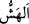

Mûsâ (a.s.) “dedi ki: O benim asâmdır.” Mûsâ (a.s.) asânın, sağ elinde olduğunu
tasdik etmek ve onunla yaptığı fiilleri sıralamak için asâyı kendine nisbet etti: Ben
yolda yürürken yorulduğumda ve otlakta koyunlarımı beklerken “ona dayanırım,
onunla davarlarıma yaprak silkelerim.”
“ ağaçtan yaprakları dökmek demektir. Burada yapraklara onunla vurur yemeleri
için koyunlarımın üzerine düşürürüm, demektir.
“Benim ona başka ihtiyaçlarım da vardır.” Benim dayanmak ve yaprak silkmek
dışında bu asâya başka ihtiyaçlarım da vardır. Mûsâ (a.s.) yürüdüğünde asâsını
omuzuna atar, okunu, yayını, süt ve içecek kabını, azık torbasını ona asar ve yolda
onunla konuşurdu.
Asânın iki dalı ve bir çengeli vardı. Dallar yüksekte olduğunda çengelle onları aşağı
eğerdi. Kırmak istediğinde de çatalıyla dalları büküp kırardı. Asânın alt ucunda
demirden bir başlık vardı. Onu toprağa batırır ve su çıkarırdı. Sevdiği meyveleri onunla
taşırdı. Asâyı kuyulardan ip gibi su çıkarmakta kullanır, asânın çatalları kova vazifesi
görüp onunla belki de su çekerdi. İp kısa geldiğinde asâsına bağlayarak suya kovayı
ulaştırırdı. Geceleri asâ yolunu aydınlatır, asâyla düşmanlarından korunurdu. Kurtlar
sürüye saldırdığında asâsıyla onları kovar, hem uyurken hem de uyanıkken onunla
uzaklaştırır, çölde giderken elbisesini üzerine asıp altında gölgelenirdi. Asânın
uzunluğu, Mûsâ (a.s.)’ın kolunun uzunluğunun on iki katıydı. Cennet ağaçlarından mersin
ağacının dalındandı. İnsan sûretinde bir melek, onu Şuayb (a.s.)’ın yanına bırakmıştı.
Kâşifî der ki: “o asâ cennetin armut ağacından idi. Asânın uzunluğu on arşındı.
Başında iki çatal vardı. Aşağı ucunda demir bir başlık vardı. Adı “Ulleyk” idi. Yâhut
asâ Âdem (a.s.)’dan Şuayb (a.s.)’a mîras olarak gelmiş, ondan da Mûsâ (a.s.)’a
ulaşmıştı.”
Asâ’da peygamberlerin insanların çobanı olduğuna da işâret vardır. Çünkü halk,
hayvanlar gibi güdülmeye, şeytan kurtlarından ve nefis aslanından korunmaya
muhtaçtırlar. Şu halde mutlaka onların gösterdiği yolu tutmalı ve hizmet için kapılarında
beklemelidirler.
Hâfız der ki:
Vâdî-i eymenin çobanı erişir murâdına
Nice yıl can ile Şuayb’a hizmet edince
Ma’rifet ehli bir zat şöyle demiştir: Asâ, vehim ve hayalleri yok eden nefs-i
mutmainnenin sûretidir. Çünkü yılan sûreti îmân için uygundur. Nitekim sahîh
rivâyetlerde zikredildiğine göre bâzı cinler Medine’de yılan sûretinde görünmüşler ve
öldürülmeleri yasaklanmıştır. Bu sebeple Mûsâ (a.s.) şöyle dedi: “O benim asâmdır.
Ona dayanırım,” yani onunla sırrımdaki arzuların gerçekleşmesine yardım isterim,
“onunla davarlarıma yaprak silkelerim” yani uzuvlarım ve hislerim gibi raiyyeme,
elimin altındaki tâbîlerime ve bedenî kuvvetlere beslenmeleri için yaprak silkelerim.